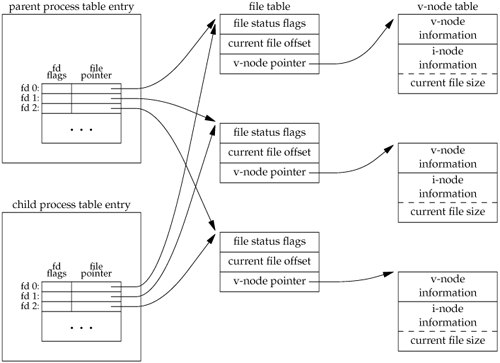

8.3. fork FunctionAn existing process can create a new one by calling the fork function.
The new process created by fork is called the child process. This function is called once but returns twice. The only difference in the returns is that the return value in the child is 0, whereas the return value in the parent is the process ID of the new child. The reason the child's process ID is returned to the parent is that a process can have more than one child, and there is no function that allows a process to obtain the process IDs of its children. The reason fork returns 0 to the child is that a process can have only a single parent, and the child can always call getppid to obtain the process ID of its parent. (Process ID 0 is reserved for use by the kernel, so it's not possible for 0 to be the process ID of a child.) Both the child and the parent continue executing with the instruction that follows the call to fork. The child is a copy of the parent. For example, the child gets a copy of the parent's data space, heap, and stack. Note that this is a copy for the child; the parent and the child do not share these portions of memory. The parent and the child share the text segment (Section 7.6). Current implementations don't perform a complete copy of the parent's data, stack, and heap, since a fork is often followed by an exec. Instead, a technique called copy-on-write (COW) is used. These regions are shared by the parent and the child and have their protection changed by the kernel to read-only. If either process tries to modify these regions, the kernel then makes a copy of that piece of memory only, typically a "page" in a virtual memory system. Section 9.2 of Bach [1986] and Sections 5.6 and 5.7 of McKusick et al. [1996] provide more detail on this feature.
ExampleThe program in Figure 8.1 demonstrates the fork function, showing how changes to variables in a child process do not affect the value of the variables in the parent process. If we execute this program, we get $ ./a.out a write to stdout before fork pid = 430, glob = 7, var = 89 child's variables were changed pid = 429, glob = 6, var = 88 parent's copy was not changed $ ./a.out > temp.out $ cat temp.out a write to stdout before fork pid = 432, glob = 7, var = 89 before fork pid = 431, glob = 6, var = 88 In general, we never know whether the child starts executing before the parent or vice versa. This depends on the scheduling algorithm used by the kernel. If it's required that the child and parent synchronize, some form of interprocess communication is required. In the program shown in Figure 8.1, we simply have the parent put itself to sleep for 2 seconds, to let the child execute. There is no guarantee that this is adequate, and we talk about this and other types of synchronization in Section 8.9 when we discuss race conditions. In Section 10.16, we show how to use signals to synchronize a parent and a child after a fork. When we write to standard output, we subtract 1 from the size of buf to avoid writing the terminating null byte. Although strlen will calculate the length of a string not including the terminating null byte, sizeof calculates the size of the buffer, which does include the terminating null byte. Another difference is that using strlen requires a function call, whereas sizeof calculates the buffer length at compile time, as the buffer is initialized with a known string, and its size is fixed. Note the interaction of fork with the I/O functions in the program in Figure 8.1. Recall from Chapter 3 that the write function is not buffered. Because write is called before the fork, its data is written once to standard output. The standard I/O library, however, is buffered. Recall from Section 5.12 that standard output is line buffered if it's connected to a terminal device; otherwise, it's fully buffered. When we run the program interactively, we get only a single copy of the printf line, because the standard output buffer is flushed by the newline. But when we redirect standard output to a file, we get two copies of the printf line. In this second case, the printf before the fork is called once, but the line remains in the buffer when fork is called. This buffer is then copied into the child when the parent's data space is copied to the child. Both the parent and the child now have a standard I/O buffer with this line in it. The second printf, right before the exit, just appends its data to the existing buffer. When each process terminates, its copy of the buffer is finally flushed. Figure 8.1. Example of fork function
#include "apue.h"
int glob = 6; /* external variable in initialized data */
char buf[] = "a write to stdout\n";
int
main(void)
{
int var; /* automatic variable on the stack */
pid_t pid;
var = 88;
if (write(STDOUT_FILENO, buf, sizeof(buf)-1) != sizeof(buf)-1)
err_sys("write error");
printf("before fork\n"); /* we don't flush stdout */
if ((pid = fork()) < 0) {
err_sys("fork error");
} else if (pid == 0) { /* child */
glob++; /* modify variables */
var++;
} else {
sleep(2); /* parent */
}
printf("pid = %d, glob = %d, var = %d\n", getpid(), glob, var);
exit(0);
}
File SharingWhen we redirect the standard output of the parent from the program in Figure 8.1, the child's standard output is also redirected. Indeed, one characteristic of fork is that all file descriptors that are open in the parent are duplicated in the child. We say "duplicated" because it's as if the dup function had been called for each descriptor. The parent and the child share a file table entry for every open descriptor (recall Figure 3.8). Consider a process that has three different files opened for standard input, standard output, and standard error. On return from fork, we have the arrangement shown in Figure 8.2. Figure 8.2. Sharing of open files between parent and child after forkIt is important that the parent and the child share the same file offset. Consider a process that forks a child, then waits for the child to complete. Assume that both processes write to standard output as part of their normal processing. If the parent has its standard output redirected (by a shell, perhaps) it is essential that the parent's file offset be updated by the child when the child writes to standard output. In this case, the child can write to standard output while the parent is waiting for it; on completion of the child, the parent can continue writing to standard output, knowing that its output will be appended to whatever the child wrote. If the parent and the child did not share the same file offset, this type of interaction would be more difficult to accomplish and would require explicit actions by the parent. If both parent and child write to the same descriptor, without any form of synchronization, such as having the parent wait for the child, their output will be intermixed (assuming it's a descriptor that was open before the fork). Although this is possiblewe saw it in Figure 8.2it's not the normal mode of operation. There are two normal cases for handling the descriptors after a fork.
Besides the open files, there are numerous other properties of the parent that are inherited by the child:
The differences between the parent and child are
Many of these features haven't been discussed yetwe'll cover them in later chapters. The two main reasons for fork to fail are (a) if too many processes are already in the system, which usually means that something else is wrong, or (b) if the total number of processes for this real user ID exceeds the system's limit. Recall from Figure 2.10 that CHILD_MAX specifies the maximum number of simultaneous processes per real user ID. There are two uses for fork:
Some operating systems combine the operations from step 2a fork followed by an execinto a single operation called a spawn. The UNIX System separates the two, as there are numerous cases where it is useful to fork without doing an exec. Also, separating the two allows the child to change the per-process attributes between the fork and the exec, such as I/O redirection, user ID, signal disposition, and so on. We'll see numerous examples of this in Chapter 15.
|